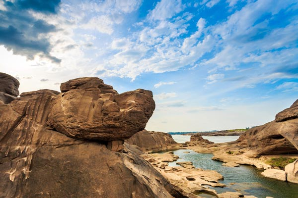
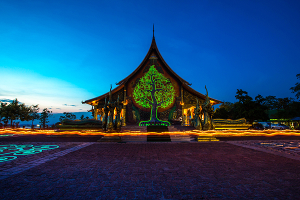

ถือเป็นอีกหนึ่งแลนด์มาร์กที่เที่ยวอุบลฯ ที่นักท่องเที่ยวไม่ควรพลาด ตั้งอยู่บริเวณบ้านสองคอน อำเภอโพธิ์ไทร โดยในช่วงหน้าแล้ง "สามพันโบก" จะโผล่พ้นน้ำให้เห็นคล้ายเป็นภูเขากลางลำน้ำโขง ความสวยงามวิจิตรของหินที่ถูกน้ำเซาะมองเห็นเป็นภาพศิลปะ บางแห่งใหญ่ขนาดเป็นสระว่ายน้ำ บางแอ่งขนาดเล็ก มีรูปร่างลักษณะที่แตกต่างกันออกไป (ตามแต่นักท่องเที่ยวจะจินตนาการ).
การไปเที่ยวสามพันโบก แนะนำว่าให้ไปเที่ยวช่วงเวลาประมาณ 06.00-09.00 น. และ 15.00-17.30 น. เพราะจะเป็นช่วงที่แดดร่มลมตก อากาศกำลังสบาย ๆ.
การไปเที่ยวสามพันโบก แนะนำว่าให้ไปเที่ยวช่วงเวลาประมาณ 06.00-09.00 น. และ 15.00-17.30 น. เพราะจะเป็นช่วงที่แดดร่มลมตก อากาศกำลังสบาย ๆ.

ตั้งอยู่ที่ตำบลช่องเม็ก อำเภอสิรินธร จังหวัดอุบลราชธานี และด้วยพิกัดที่ตั้งของวัดอยู่บนเนินเขาสูง นอกจากพื้นที่นี้จะเป็นที่ประดิษฐานโบสถ์อันสวยงามแล้ว ยังมีจุดชมวิวและทัศนียภาพอยู่หลายจุด หรือจะนั่งชมความสวยงามของพระอาทิตย์ตกยามเย็นก็ยังได้ แต่ไฮไลท์เด็ดที่นักท่องเที่ยวไม่ควรพลาดเลย ก็คือ การได้มาชมภาพเรืองแสงสีเขียวของต้นกัลปพฤกษ์ ซึ่งเป็นจิตรกรรมบริเวณด้านหลังของอุโบสถนั่นเอง.
 ตั้งอยู่ที่อำเภอนาจะหลวย โดยจุดเด่นของการเดินทางมาเที่ยวที่ภูจองนายอย คือ การได้มาชมความงามของ "น้ำตกห้วยหลวง" มีลักษณะเป็นหน้าผาหินที่มีน้ำกระโจนตกจากที่สูงลงสู่แอ่งน้ำเบื้องล่าง โดยบริเวณแอ่งน้ำด้านล่างน้ำตกสามารถลงเล่นน้ำได้ด้วย กระแสน้ำที่ไหลตกจากที่สูงทำให้เกิดเป็นหาดทรายขนาดย่อม ซึ่งแวดล้อมด้วยป่าไม้ที่ร่มรื่น นับเป็นหาดทรายกลางป่าที่สวยงามไม่เหมือนที่ใด ๆ และจะสวยงามมากที่สุดในช่วงปลายฝนต้นหนาว.
ตั้งอยู่ที่อำเภอนาจะหลวย โดยจุดเด่นของการเดินทางมาเที่ยวที่ภูจองนายอย คือ การได้มาชมความงามของ "น้ำตกห้วยหลวง" มีลักษณะเป็นหน้าผาหินที่มีน้ำกระโจนตกจากที่สูงลงสู่แอ่งน้ำเบื้องล่าง โดยบริเวณแอ่งน้ำด้านล่างน้ำตกสามารถลงเล่นน้ำได้ด้วย กระแสน้ำที่ไหลตกจากที่สูงทำให้เกิดเป็นหาดทรายขนาดย่อม ซึ่งแวดล้อมด้วยป่าไม้ที่ร่มรื่น นับเป็นหาดทรายกลางป่าที่สวยงามไม่เหมือนที่ใด ๆ และจะสวยงามมากที่สุดในช่วงปลายฝนต้นหนาว.